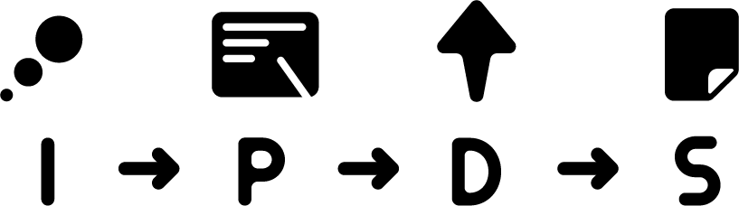

SDT (Seamless Design Thinking)
「シームレスなデザイン思考でモノやコトの可能性を広げる」というチームコンセプトに直結した、Design Team OCTOのメインプログラムです。大きく4段階に分かれた一連のフローを順番にクリアしていくことで1つのデザインアプローチを提案します。

僕らの重視している問題点の中に、「デザイン職の細分化」が挙げられます。それをクリアするための研究課題としてこの活動プログラムがあります。
「問題点や、それを解決するアイデアが先行した上でのデザイン分野の選定」という形が「シームレスなデザイン思考」です。。それによって視野がより拡がり、モノやコト、ヒト、行為の新たな価値や魅力の発見につながります。OCTOの中での知見を拡げ、各々の活動、デザインワークに活かしていくことがねらいであり、最終的に誰が見てもわかるコンセプトボードにまとめることで、提案力育成とプロジェクトの枠組みとしての目標としています。
この活動を皆さんの目に触れる形で提案することで、結果的にモノやコト、ヒト、行為の可能性を拡げることができるのではないでしょうか。そして「シームレスなデザイン思考」によりデザインそもそもの可能性さえも拡げることが可能であると考えます。